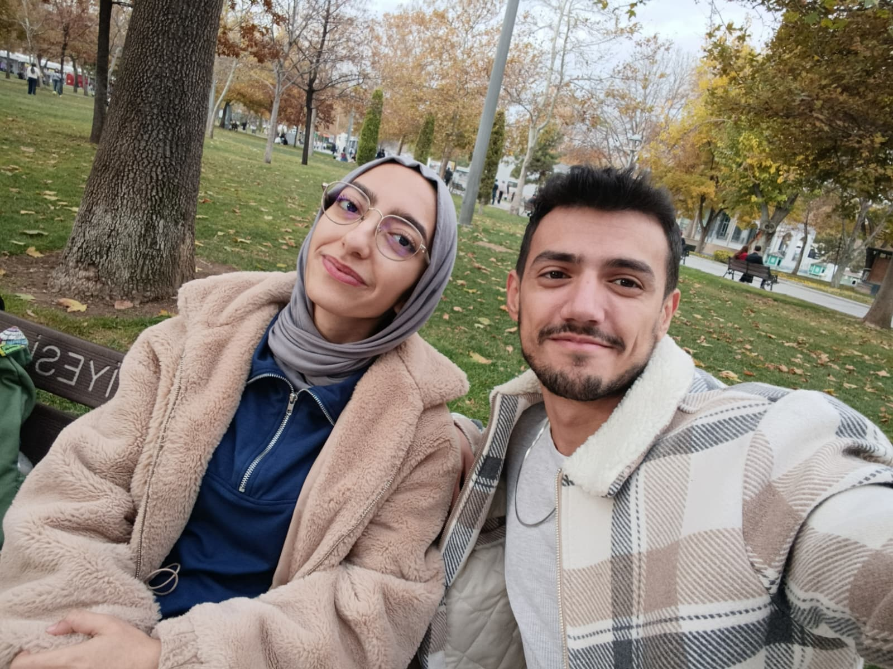
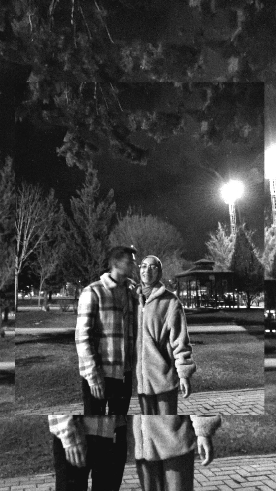
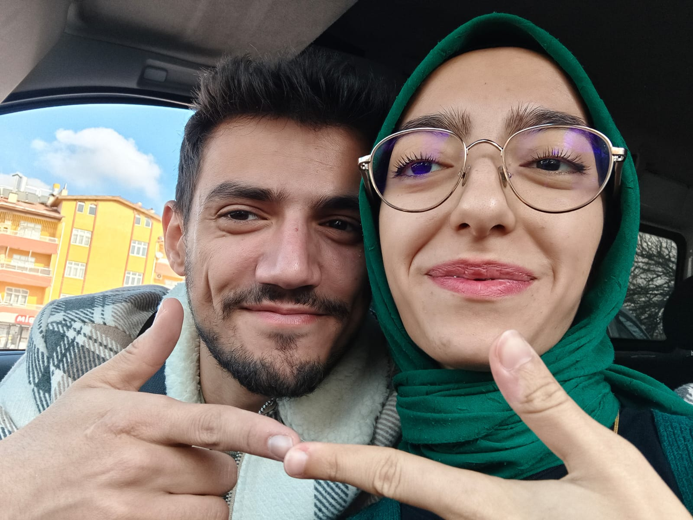
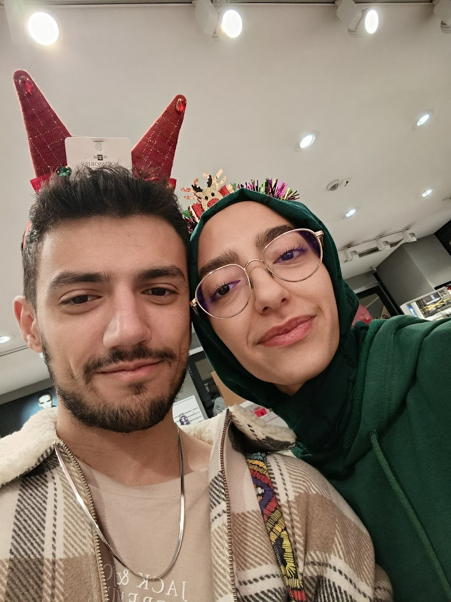
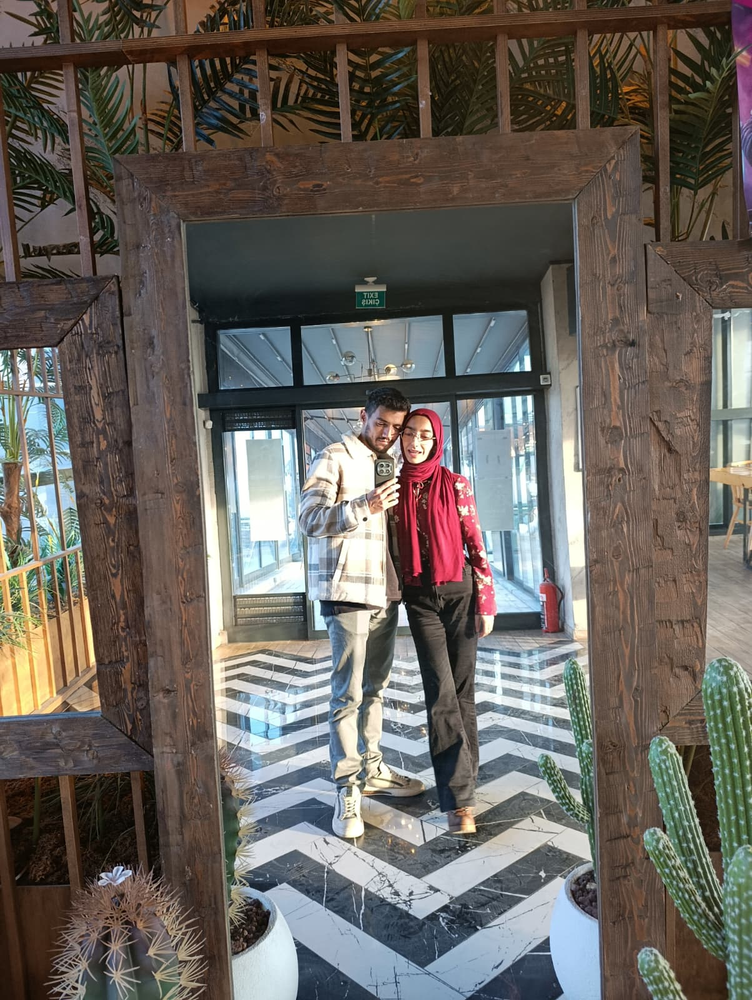
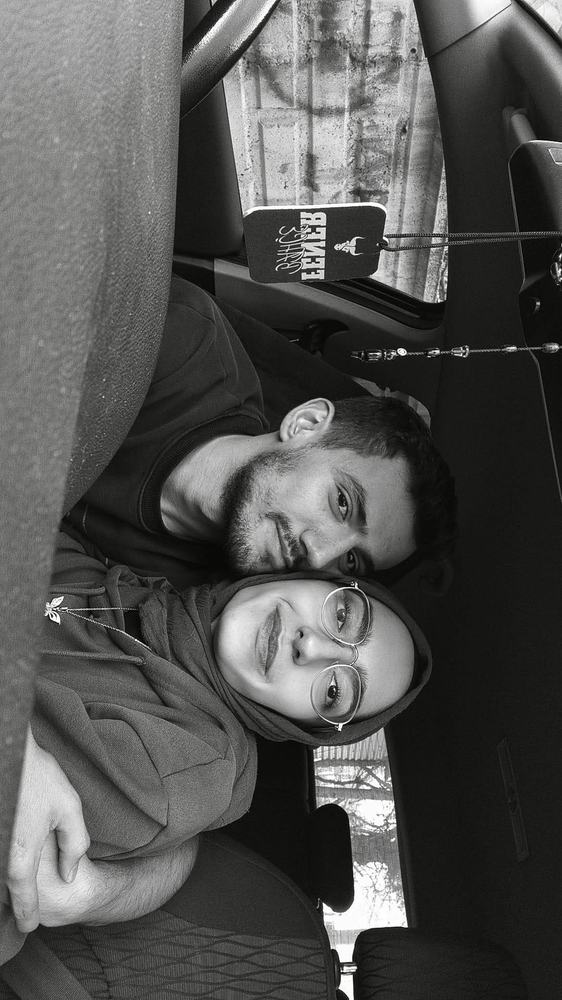
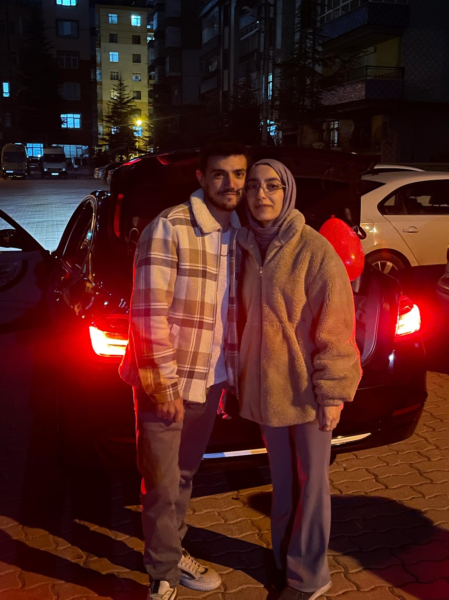
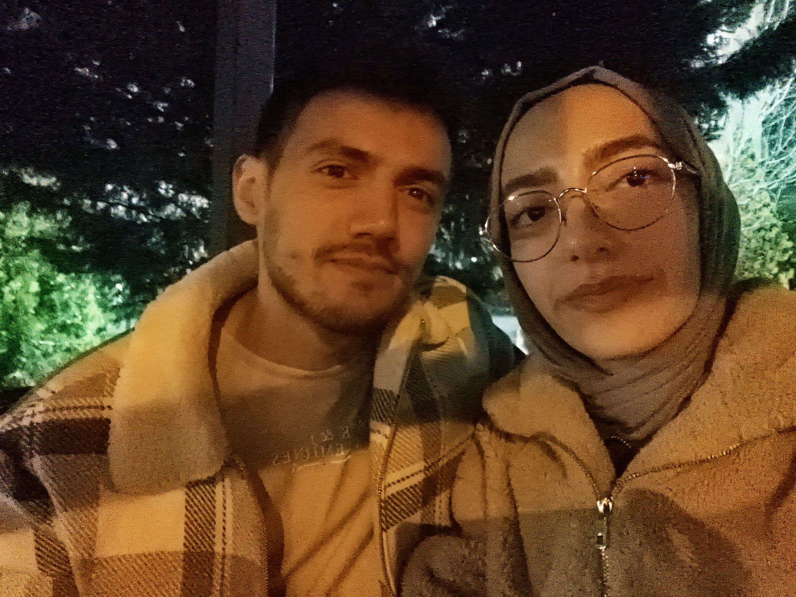

Mi amor, seninle geçen her an yeni bir hikaye...
Her şeyin başladığı muazzam gün senin isminle beraber kalbime kazındı rüya gibi ama gerçek bulutların üzerinde olmak gibiydi seni tanımak



Hayatımı muazzam bir şekilde renkendirişini hayretle izliyordum dünyayı o güzel gözlerinden görüyor senin kokunla nefes alıyordum bu bir rüya ise sonsuza kadar sürsün gülüşmelerimiz hiç bitmesin.


Sana bakarken içimden hep bu şarkı geçiyor çünkü dünyanın en güzel kızı tam karşımda duruyor...
(Not: Linke tıkla ve şarkıyı tam 1:25'e kaydır, asıl söylemek istediğim orası 😉)
Bazen bir kahve içerken manzaya bakmak temiz hava çekmek ister insan bu onu rahatlatır heh işte sen benim manzaramın nefes aldığım havanın ta kendisiydin ben huzuru senin kalbinde gözlerinde buldum .

Seninle bi ayı daha geride bıraktık hayatım takvim değişir hayat değişir ama benim sana olan sevgim asla değişmeyecek her nefesimde seni seveceğim iyiki varsın herşeyimm..

